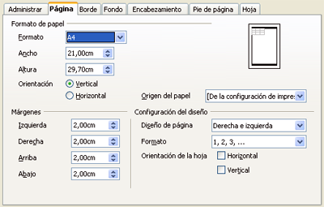

3.3. Visualización e impresión de una hoja
Como has aprendido anteriormente, una hoja de cálculo permite realizar operaciones aritméticas y cálculos automáticos. Muchas de las aplicaciones de este tipo de programas generan informes, gráficos y documentos. Por tanto, es importante controlar los parámetros de visualización e impresión.
Visualización
Por defecto, el OOo muestra la pantalla con un zoom del 100%, que se puede cambiar en la barra de estado. En el menú "Ver" También tienes la opción de "Pantalla completa", con la cual se puede disponer de un área mayor de trabajo.
Para conocer todas las opciones de visualización del programa OOo Calc, tienes que acceder al siguiente menú: "Herramientas", "Opciones", "OpenOffice.org Calc", "Ver".
Cuando queremos visualizar una hoja de cálculo y ver cómo sería si la imprimiésemos en ese momento, debemos utilizar la opción "Vista preliminar" del menú "Archivo". También se visualizarán de este modo los encabezados y pies de página. Al cerrar esta opción, aparecen unas líneas discontinuas que indican los límites de impresión y los saltos de página.
Impresión
A la hora de imprimir una hoja de cálculo, se pueden modificar muchos aspectos del documento que se quiere imprimir: orientación, márgenes, fondo, etc.|
En el menú "Formato", se selecciona la opción "Página" y aparecen diferentes pestañas, cada una de las cuales permite actuar sobre algún aspecto del documento a imprimir: el formato de la página, los bordes, el fondo, el encabezamiento, el pie de página y la hoja. En la pestaña referida a la hoja, existen opciones de impresión que permiten seleccionar los datos que se van a imprimir de la hoja de cálculo. La potencia de las hojas de cálculo también se refleja en esta acción ya que se puede elegir la impresión de sólo datos, de gráficos e incluso de fórmulas.
En el menú "Archivo", en la opción "Imprimir" también se puede seleccionar imprimir celdas y hojas determinadas o todo el libro.
|
 Captura de elaboración propia |
Comprueba lo aprendido
Retroalimentación
Falso
Retroalimentación
Verdadero
Tanto uno como otro se pueden activar y ofrecen además posibilidades de modificación.Retroalimentación
Falso
Es posible seleccionar únicamente la opción imprimir "Gráficos".Retroalimentación
Verdadero
Ejercicio resuelto
- Desactiva la opción "Líneas de cuadrícula" en el menú "Ayuda óptica".
- Activa la opción "Fórmulas" en el menú "Mostrar".
- Desactiva la opción "Títulos de filas y columnas" en la opción "Ventana".
¿Qué cambios se han producido en la hoja de cálculo?
Obra publicada con Licencia Creative Commons Reconocimiento No comercial Compartir igual 4.0